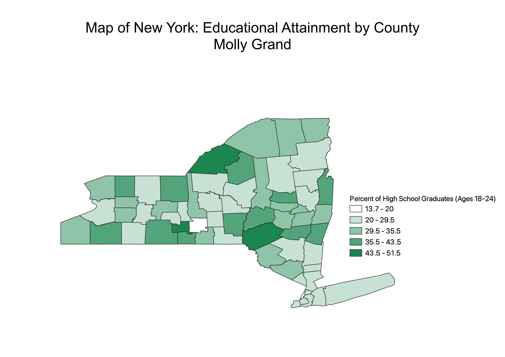

Homework 6 Part 1: Census data choropleth
Molly Grand
The chloropleth map below shows the percent of 18-24 year olds that
graduated high school in New York State by county. From the map, we can see that
the graduation rates are pretty variable throughout the state, but that there is a
cluster of lower graduation rates in the southeast part of NY.

Data used for this project
CSV dataset
Link to geoJSON